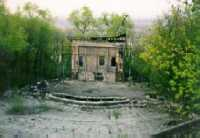 |
Вид со стены форта (верха зрительного зала) на сцену.
Видны остатки самой сцены, трехэтажная постройка на сцене, аркестровая
яма, вход в подвал под сцену. Обратите внимание на верх постройки справа:
именно туда постоянно попадают молнии.
Очень красиво смотрится отсюда город вдали, особенно ночью... |
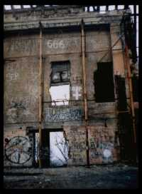 |
Остатки постройки на сцене. Роспись сохранилась со времен пожара и часто (хотя и не так активно, как раньше) обновляется. Видно множество надписей, оставшихся тут со времен, когда Театр был местом проведения религиозных обрядов сатанистов. |
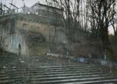 |
Северная часть верхней стены. Виден "северный" вход в галерею. |
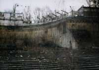 |
Северная половина стены. Сверху видна двухэтажная надстройка, откуда открывается один из красивейших видов, а чуствительные люди могут найти там интересное место, где "поток" влияет на сознание и помогает почуствовать многое интересное... |
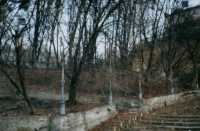 |
Южная сторона театра, вид со сцены. Справа виден кусок стены форта. Cудя по надписям на некоторых кирпичах, стена строилась в 17?? году и достраивалась в 1954 году. |
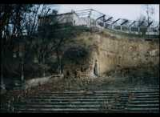 |
Вид со сцены на Южную сторону средней стены со сцены. Виден так называемый "южный" вход в галерею в стене. |
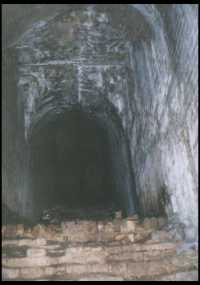 |
Проход наверх возле южного входа. Когда-то там была лестница. Далее - глухая, кладка, чуть разрушеная, за ней видны корни деревьев и глина. Скорее всего, это был "официальный" вход в галерею, по аналогии с нижней стеной. На фотографии можно наблюдать ноги трупа, одетые в кроссовки. Шутка. Но народ часто ведется ;) |
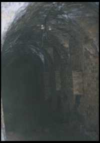 |
Продвигаемся в галерею со стороны южного входа. Так выглядит сама галерея. Справа - бойницы, оставшиеся с петровских времен. Сверху можно видеть остатки ламп и плафонов - когда-то тут было электрическое освещение... |
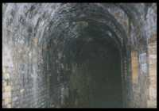 |
Идем далее... Все те же бойницы и потолки. Внизу чуть вперед - две ямы, одна из которых - в человеческий рост глубиной. В нее очень любят падать (с весьма серьезными кстати последствиями) "новички" и те, кого Зеленка "не любит". |
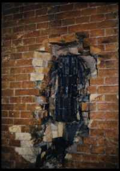 |
Стена в зале, который находится в центре галереи. Вероятно, здесь когда-то был камин или просто жгли костер. Сверху идет воздуховод - круглый проход диаметром около 20 сантиметров, ео верх исследовать не удалось, но выходов на поверхность он не имеет. Существует около 10 таких воздуховодов по всей галерее. Это косвенным образом подтверждает легенды о втором этаже театра... У меня есть намерение запихнуть в такой проход портативную видеокамеру. Результаты будут незамедлительно выложены в раздел новостей. |
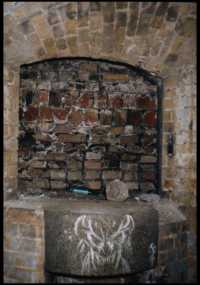 |
Замурованое окно в зале в центре галереи |
 |
Окно в так называемую "комнату сатанистов", где некогда обитавшие тут сатанисты справляли свои религиозные обряды. Хотя скорее, сатанисты появились из-за Места, но никак ни Место из-за них. Место было до сатанистов, Место осталось и после... |
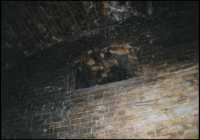 |
А это вход далее. Налево - вход в комнатку сатанистов, направо - винтовая лестница наверх. |
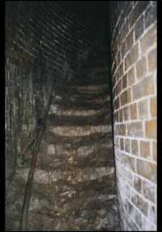 |
Винтовая лестница. |
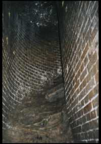 |
Винтовая лестница наверх, ведущая от "комнатки сатанистов" в зале вверх. Одно из сильных доказательств возможного существования второго верхнего этажа в стене. Иначе зачем она там? Хотя не исключено, что именно северный и южный входы были пристроены в наше время, а изначально доступ в га лерею стены был сверху. Тогда лестница должна вести наружу, хотя сверху выхода не наблюдается. В пользу этой версии - архитектура нижней стены, доступ в галерею которой осуществляется исключительно сверху, а также проход возле южного входа. |
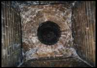 |
Это отверстие вверху прохода с винтовой лестницей. Скорее всего, оно служило либо отводом для дождевой воды (на лестницу?!), либо вентиляционным отверстием. |
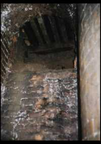 |
Это - верх винтовой лестницы. Абсолютно не ясно, что там было до того, как все было разрушено. Стоит обратить внимание на ярко-белые разводы по центру и слева вверху: визуально (не на фотографиях) они невидимы. С этим местом связана одна из легенд Зеленки, это место является сильно энергетически активным. |
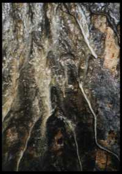 |
Так выглядит потолок винтовой лестницы. Подобные потеки присутствуют везде по галерее, но здесь они наиболее выражены. . |
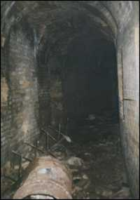 |
Галерея средней стены театра. Часть, которая ближе к северному входу. На полу много разбитой черепицы - пройти незамеченым здесь практически невозможно из-за далеко слышимого звука при ходьбе. По центру чуть слева - одно из ответвлений непонятного назначения. |
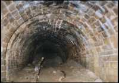 |
Ответвление от центра галереи в стене, назначение неизвестно. Ответвление тщательно засыпано песком, но даже намеков на окончание кладки не видно. С большой вероятностью существует ход далее, но откопать его пока не удалось, несмотря на многочисленные старания. |
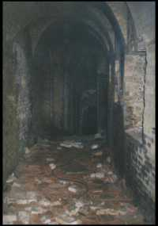 |
Двигаемся дальше в сторону северного входа (выхода). Он уже виден вдалеке. Справа видны бойницы - форт изначельно звдумывался как мощная военная оборонительная система. Слева вблизи - замурованые проходы. Еще не все они вскрыты, но все, что вскрыты, оказались обманками: просто замуроваными выемками в стене. Есть две версии: первая говорит, что так было сделано для затруднения исследований (попробуйте продолбить полуметровую кирпичную стену!), другая - что кому-то из начальства ровный проход был более "по душе". Но врядли мы узнаем истиную причину... Вдалеке слева - ответвление в два человеческих роста, которое наполовину замуровано и засыпано песком. Возможно, там есть ход далее. |
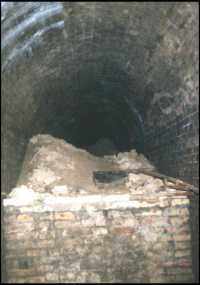 |
Так выглядит ответвление от галереи возле северного входа. Нетрудно догадаться, что когда-то это был главный проход, ведущий... хотел бы я знать, куда именно ведущий... Но как минимум два засыпаных ответвления справа на расстоянии около трех метров говорят о том, что тут скорее всего было хранилище каких-то материалов или комнаты. Но кому и зачем понадобилось засыпать все это песком так, что откопать даже один проход весьма проблематично? Впрочем, это не смущает любителей старины и острых ощущений попытаться это сделать. Справа можно заметить древко от лопаты: копают тут до сих пор, в основном ночью. И для того, чтобы избежать регулярных обходов (их распорядок, позывные, радиочастоты и другая информация есть в разделе информации на этом сайте) милицией (вроде ничего незаконного, а поди обьясни милиционеру, зачастую не отягощенному интеллектом, что ты тут делаешь, да еще и после того, как осквернение Оскольдовой могилы приписали (по-моему, абсолютно бездоказательно) остаткам местных сатанистов), и для избежания абсолютно ненужных встреч с "гопотой" и "туристами". |
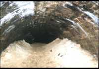 |
Вот так выглядит завал ответвления возле северного входа в галерею. Если пролезть далее - будет ход в рост человека, заваленый глиной, со следами кирок и ломов, с помощью которых пытались пробиться дальше. Пока это никому не удалось - Зеленка надежно хранит свои тайны... |
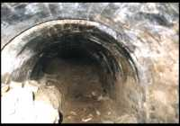 |
Засыпаный проход-ответвление от ответвления сразу возле северного входа в галерею. Ее копали в надежде найти спуск на нижние уровни, но ход заканчивается кирпичной кладкой. Увидя это, копающие обламались, однако я бы не стал делать поспешных выводов, не поглядев внимательно на кладку (пока что это невозможно). Если кладка современная - это должно только увеличить энтузиазм. |
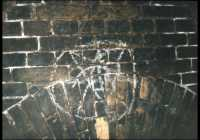 |
Следы, оставленые сатанистами при попытках пробиться в нижние уровни форта. Оставлены во время раскопок в ответвлении от ответвления возле северного входа. |
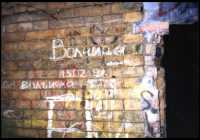 |
Сразу возле северного входа. Кладка нашего времени: это всего лишь пристройка к основной галерее. |